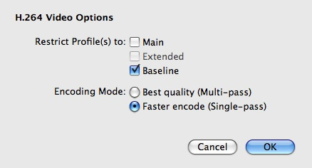
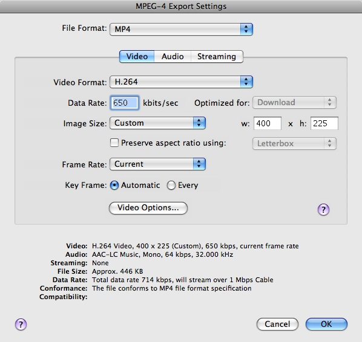
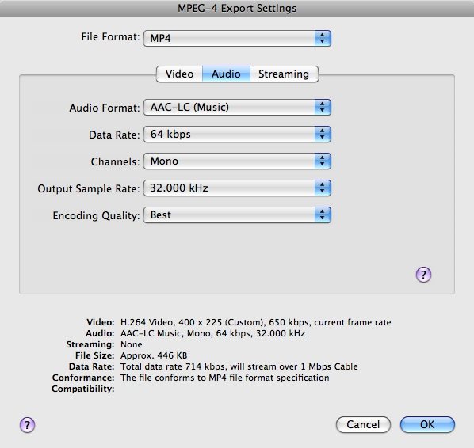
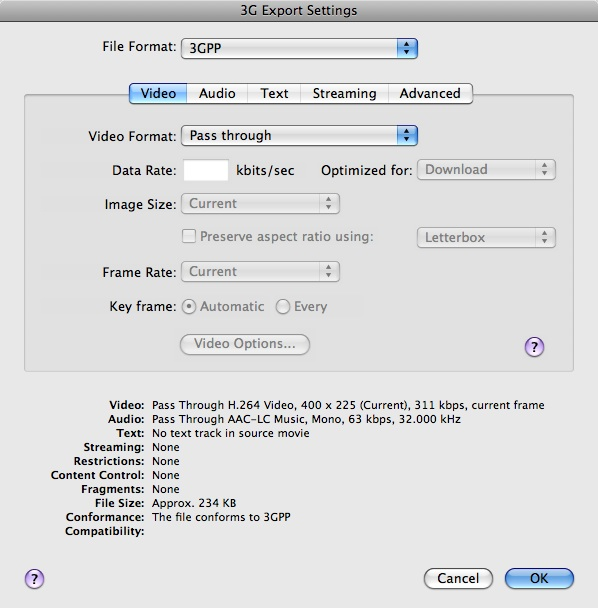
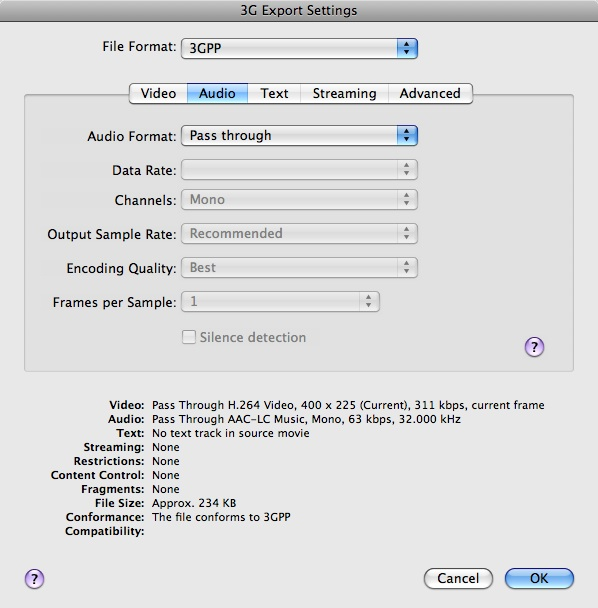
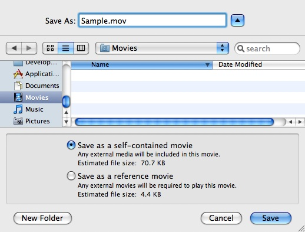

|
IntroductionMany Devices and Delivery ChallengesContent creators wanting to create movies destined for the web are faced with a number of challenges. Movies can be compressed in a variety of ways, using a variety of different codecs, and for each codec there are a myriad of options that must be specified when compressing your movie, such as size, data rate, frame rate, and so on. Movies should also be optimized for different delivery speeds such as cell phone networks, Wi-Fi, DSL, Cable, and corporate networks. Compressing higher quality movies gives the user a better experience, but a higher quality movie will require more powerful devices for playback, and will also require more bandwidth to download. Given all these considerations, how can you be sure your movies will look great on the web? Read on for all the details. H.264QuickTime 7 features a state-of-the-art video codec (compressor) called H.264. For the highest quality at the lowest data rate (or the smallest file), we recommend you use the H.264 video codec to compress your video. H.264 delivers stunning quality at remarkably low data rates. Ratified as part of the MPEG-4 standard, this ultra-efficient technology gives excellent results across a broad range of bandwidths, from 3G for mobile devices to iChat AV for video conferencing to HD for broadcast and DVD. H.264 uses the latest innovations in video compression technology to provide incredible video quality from the smallest amount of video data. This means you see crisp, clear video in much smaller files, saving you bandwidth and storage costs over previous generations of video codecs. H.264 achieves the best-ever compression efficiency for a broad range of applications, such as broadcast, DVD, video conferencing, video-on-demand, streaming and multimedia messaging. And true to its advanced design, H.264 delivers excellent quality across a wide operating range, from 3G to HD and everything in between. Whether you need high-quality video for your mobile phone, iChat, Internet, broadcast or satellite delivery, H.264 provides exceptional performance at impressively low data rates as shown in Table 1. Table 1 : H.264: Exceptional quality at any size
The Apple H.264 video codec can be used when exporting both MPEG-4 files and QuickTime movies. Use the MPEG-4 Exporter video settings if you require more precise control when exporting with H.264. See MPEG-4 or QuickTime Movie? for more details. Fast Start (Progressive Download) MoviesWhen preparing movies for delivery on the Web, we recommend you set the Fast Start setting. Fast Start movies (also known as progressive download) can be displayed before all of their data has been received over a network or other slow link. QuickTime is able to instantiate the movie and start playing it before the entire file has arrived. A Fast-Start download is a simple file transfer. Any QuickTime movie saved using the Fast-Start option can be played before all of its data has been received. IMPORTANT: Editing your movie will break the Fast Start setting. Re-enabling Fast Start with QuickTime ProIf you notice your movie stuttering & stopping during playback, or if you have to download the entire movie before playing it, you may need to re-enable the Fast Start setting as shown here: In QuickTime Pro, choose File > Save As and then select "Save as a self-contained movie." Use QuickTime ProQuickTime 7 Pro was used for all the compression examples in this article. QuickTime 7 Pro is a powerful application ideal for creating high-quality audio and video content. Use it to create H.264 movies, capture audio and video, create multi-channel audio and export multiple files as you continue to playback or edit video. For more information see QuickTime Pro. The Importance of Source MaterialWhen working with video and audio a good general rule of thumb is to get the highest quality original source material as possible. When you compress, very often some information gets lost or thrown away. Therefore, you should only compress material when encoding for the final destination, because each process will lower the quality. Trying to compress from already heavily compressed source material may give poor results. Always start with the highest quality source video & audio, and make lower bit rate movies from the original source. Pick a TargetDeviceThe first thing to do is pick a device target for your movie: desktop, iPhone, iPod or Apple TV. Movie audio and video must be compressed within a specific range of settings to ensure full compatibility with each device. Device Determines Movie DimensionsThe device you are targeting will determine your movie dimensions. For example, movies targeted for iPod will be generally be smaller than movies targeted for the desktop in order to play back smoothly. NetworkNext, pick a delivery speed for your movie: cell phone network, Wi-Fi, DSL, Cable, corporate network or desktop. Network Determines Target BandwidthThe amount of bandwidth available for the target connection will determine what the target data rate should be, and if targeting iPhone over EDGE it may necessitate encoding using 3GPP. MPEG-4 or QuickTime Movie?You may choose to export your file as a QuickTime movie file (.mov) or as an MPEG-4 file (.mp4). Start by creating an MPEG-4 file with H.264 compression because the MPEG-4 exporter video settings dialog gives you the most control over the H.264 compressor settings. For example, it allows you to restrict the H.264 profile to either Main or Baseline, and to turn off multi-pass compression needed to target iPhone or 3GPP. Figure 1: MPEG-4 Exporter Video Settings for H.264.  You would want to deploy a QuickTime movie if you are going to include chapter tracks or other QuickTime specific features, or take advantage of QuickTime's Fast Start technology. For more information about the available features in QuickTime, see the Apple QuickTime technology page. For information about the QuickTime file format, see the QuickTime File Format Specification. Converting MPEG-4 files to QuickTime MoviesThe MPEG-4 file format is largely based on the QuickTime file format, and an MPEG-4 file can be easily converted to a QuickTime movie file using the steps below. In QuickTime Pro, choose File > Save As and then select "Save as a self-contained movie." Recommended H.264 Compressor SettingsIncluded with this Technote in the Downloadables section are recommended compression settings to use when creating H.264 compressed QuickTime movies destined for the web. The settings are grouped according to whether you are working with standard definition (SD) or high definition (HD) content, and whether the content is intended to be streamed, downloaded or delivered for iPhone (EDGE/Wi-Fi). Use these settings as a starting point in your movie creation process, then fine-tune your movies with additional compression to get the desired results. Note: Your results with movies produced using these same settings may vary considerably depending on real world conditions. For example, movie playback over the Wi-Fi in your local coffee shop may be erratic if there is heavy network traffic. The settings file defines values for the following compression settings:
Recommendations for Creating Your Own SettingsThe Recommended H.264 Compressor Settings produce the highest quality movie without overwhelming the device, and will work on all devices. They are appropriate for "medium" motion content (such as a music video). However, they may not be appropriate for all other types of content. For example, here's a sampling of some of the different types of video you might be working with:
If you are targeting movies that have very fast motion (such as sporting events), or if you have concerns about bandwidth, you may need to perform additional compression on your video to get the desired results. In this the case, use the above settings as a starting point, and recompress until you are satisfied with the results. Optimal results may take many tries! Here are some general guidelines for those wishing to target various other types of video: For WIFI iPhone. Table 2 : Resolution.
For other aspect ratios adjust accordingly using a width of 400 Table 3 : Bitrate.
Bitrate will vary based on resolution and type of video. As the amount of motion in a clip increases, you will need to increase bit rate. We recommend you always increase at an interval of 50 kbps and test again. Table 4 : Audio.
Table 5 : Frame Rate.
For EDGE iPhone. Table 6 : Resolution.
Table 7 : Bitrate.
As the amount of motion in a clip increases you will need to decrease the frame rate. Table 8 : Audio.
Table 9 : Frame Rate.
Adjust downward based on the amount of motion in the clip. ExamplesExporting for iPhoneHere's how you can export for iPhone using QuickTime Pro. When targeting movies for iPhone you must be sure they are H.264 Baseline Profile compatible (see H.264 Profiles for more information). WARNING: If you try to export to a movie in QuickTime Pro with the 'Movie to QuickTime Movie' Export option and you use the video and audio settings for iPhone from the enclosed settings file, the resulting movie will not actually be H.264 Baseline Profile compatible. Instead, use the technique described in this section to target movies for iPhone: First, use the MPEG-4 exporter video settings dialog to specify the Baseline profile and turn Multi-Pass compression off. Save as an MPEG-4 file. Then save the MPEG-4 file as a QuickTime movie. For this example, we'll target iPhone for delivery over Wi-Fi (High Motion). The recommended settings are shown here:
Exporting an MPEG-4 fileFollow these steps: 1. Open your source file in QuickTime Player. 2. Choose File > Export. 3. Select the Movie to MPEG-4 export option. 4. Press the Options button and specify the following video settings: a. File Format - MP4 b. Compressor - H.264 c. Data Rate - 650kbps d. Image Size - 400 X 225 (Custom) e. Frame Rate - Current f. Key Frame - Automatic Figure 2: MPEG-4 video export settings for iPhone.  5. Press the Video Options button and specify the following settings: a. Restrict Profiles to Baseline only b. Single-pass encoding mode Figure 3: H.264 Video Options. 6. Press OK to save your changes. 7. Press the Audio tab and specify the following audio settings: a. Audio Format - AAC-LC (Music) b. Data Rate - 64kbps c. Channels - Mono d. Output Sample Rate - 32kHz Figure 4: MPEG-4 audio export settings for iPhone.  8. Press OK to save your changes. 9. Press the Save button to save your file as an MPEG-4 file (.mp4). 10. Your MPEG-4 file is now ready for iPhone playback over Wi-Fi. Exporting a 3GP fileFollow these steps to create a 3GP file with H.264 compression that is Baseline Profile compatible: 1. Repeat steps 1 thru 10 from Exporting an MPEG-4 file to create an MPEG-4 file with the specified settings. 2. Choose File > Open to open your MPEG-4 file in QuickTime Player. 3. Choose File > Export. 4. Select the Movie to 3GP export option. 5. Press the Options button and specify the following 3GP video settings: a. File Format = 3GPP b. Video Format = Pass through Figure 5: 3GP Video Settings.  6. Press the Audio tab and specify the following audio settings: a. Audio Format = Pass through Figure 6: 3GP Audio Settings.  7. Press OK to save your changes. 8. Press the Save button to save your 3GP file. Your 3GP file is now ready for deployment. Converting an MPEG-4 File to a QuickTime MovieFollow these steps to convert your MPEG-4 file to a QuickTime movie: 1. Select File > Open to open your MPEG-4 file. 2. Select File > Save As and save your MPEG-4 file as a self-contained movie: Figure 7: Saving your MPEG-4 file as a self-contained movie.  3. Your movie file is now ready for deployment. Your movie is now Fast Start enabled as well. Including QuickTime Movies In A Web PageNow that you've finished compressing your movie, you can deploy it to the web. QuickTime movies can be included in a web page allowing visitors to your website to experience media seamlessly inside their browser. This is accomplished by adding some HTML to your web page that tells the QuickTime browser plug-in to display the media. See the Including QuickTime In A Web Page Tutorial to learn more. Specifying Multiple Movie Targets using Reference MoviesIf you have more than one target, you should compress your movie more than once. Compressing multiple versions of a movie takes time, and posting multiple versions uses disk space. But it makes a better experience for your users. If you can spend the time and have the space, compress different versions and target them using what is called a reference movie. A reference movie contains pointers to alternate data rate movies--that is, multiple versions of the movie designed for downloading at various data rates. These alternate data rate movies do not typically all reside in the same reference movie file (although you may optionally "flatten" any of these movies into the reference movie so that they are all contained within the same file); any others are included by reference only. For example, a QuickTime movie can contain a list of references to movies having different data rates, allowing an application to choose the best-looking movie that can play smoothly as it downloads over the Internet, based on the user’s connection speed. Here's an example: to target iPod Touch and iPhone over EDGE/Wi-Fi you could create two versions of your movie with different data rates as shown in Table 10 and then create a reference movie that targets them based on connection speed: Table 10 : Creating Multiple Versions of a Movie to target iPod Touch and iPhone over EDGE/Wi-Fi.
You can use the MakeRefMovie tool to create a reference movie. See the Reference Movies Tutorial to learn how to use the MakeRefMovie tool to create a reference movie. The alternative is to optimize compression for one delivery medium at the expense of the others; you can compress for delivery over a slow connection, for example, with lower quality than you could provide to people with faster connections, and let people with slower connections wait a bit longer to see the movie. Some people would rather wait however long it takes to get the best-quality movie, so if you use alternate movies, you might want to include a way for people to download the high-bandwidth version, regardless of their connection speed. For example, when targeting Apple TV you can provide a separate download to allow users to get the high bandwidth version of your movie as shown here: Table 11 : Movie Download for Apple TV.
Here's the download for iPod: Table 12 : Movie Download for iPod.
QuickTime Pro One-Step Exportfor the iPod, Apple TV and iPhoneThis one-step export gives users the ability to quickly and easily produce movies for specific devices. Advanced users who would like to optimize for bandwidth or take advantage of other H.264 features should instead use the techniques described in this article. for the WebQuickTime Pro provides a simple one-step export that will produce different versions of your movie for web-delivery to iPhone and the desktop. It creates a reference movie that automatically selects the best version for the device and Internet connection and produces HTML code with instructions showing how to embed your movie into your web page. This one-step export gives users the ability to quickly and easily produce movies for Web delivery to iPhone and the desktop using the one step exporters for iPod and iPhone. Again, advanced users who would like to optimize for bandwidth or take advantage of other H.264 features should instead use the techniques described in this article. ReferencesDownloadables
Document Revision History
Posted: 2008-05-01 |
|